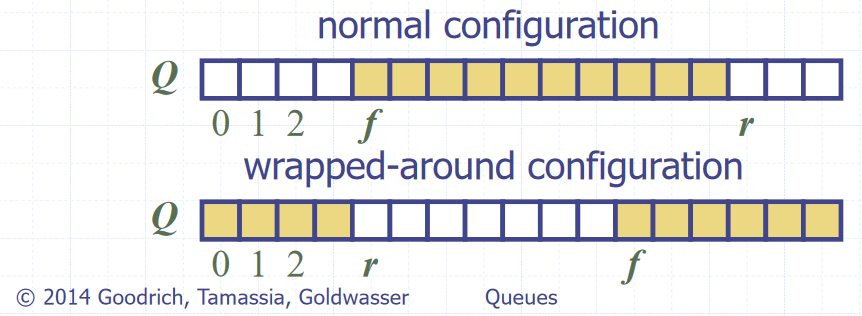

Stacks (ADT)
- A “Last in, first out” (LIFO) data structure - both insertions and deletions occur at the front of the stack
- Two fundamental operations
- push(e), pop(), size(), isEmpty()
- Edge case of popping from an empty stack, normally either returns null or throws an error
- Array based implementation (Concrete)
- Index of head stored, and incremented/decremented on pushing/popping operations
- \(O(n)\) space complexity
- \(O(1)\) time complexity of fundamental operations
Queues (ADT)
- A “First in, first out” (FIFO) data structure - insertions occur at the rear and removals at the front of the queue
- Fundamental operations
- enqueue(e), dequeue(), size(), isEmpty()
- Edge case of dequeuing from an empty queue, normally either returns null or throws an error
- Array based implementation (Concrete)
- Uses and array with data wrapping around as it is added and removed. Both the index of the head \(f\) and the size of the queue \(s\) need to be stored
- The rear of the queue (index to next insert to) is \((f + s)\ MOD\ N\), with \(N\) as the array size

Image source: Data Structures and Algorithms in Java, Goodrich, Tamassia, Goldwasser
- \(O(n)\) space complexity
- \(O(1)\) time complexity of fundamental operations